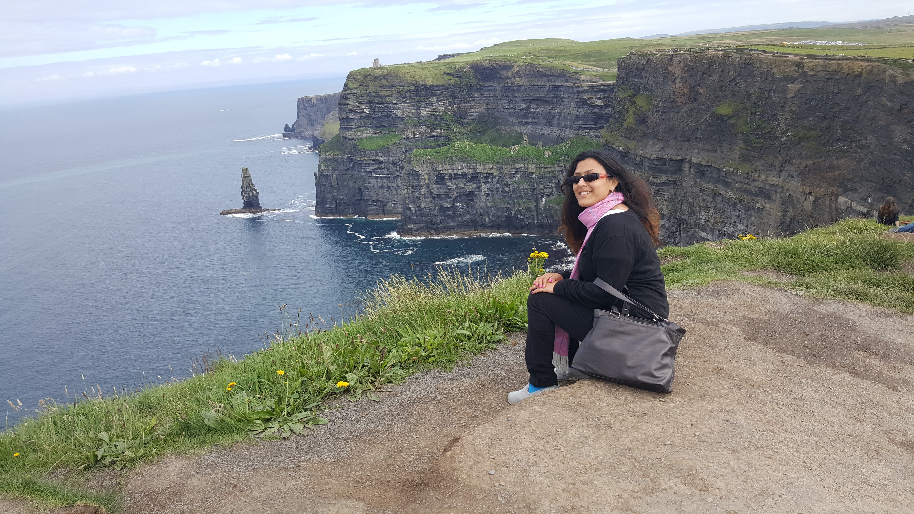

About
Ireland is a green country. All you see is greenery. Ireland is the third-largest island in Europe.
Cliff of Moher is nature's finest creation. At peak season, there are an estimated 30,000 pairs of birds living on the cliffs, representing more than 20 species. The sea cliffs are located at the southwestern edge of the Burren region in County Clare, Ireland.[2][3] They run for about 14 kilometres.
